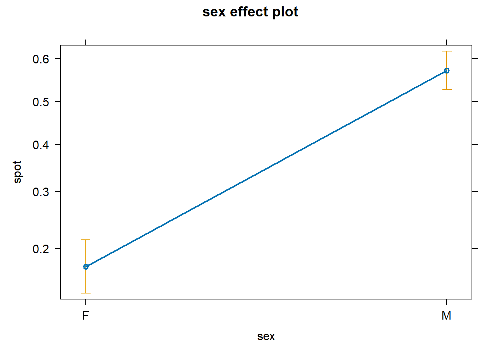

pkin <- read.table(file = "https://www.dropbox.com/s/xq2dojah9k0kftu/pumpkinseed.txt?dl=1",
header= TRUE, dec = ".", stringsAsFactors = TRUE)Clase 7: Modelos lineales Generalizados
Un modelo lineal general (GLM) con una distribución binomial se utiliza para modelar datos de respuesta binaria, es decir, datos que tienen solo dos posibles resultados, como sí/no, verdadero/falso o exitoso/fracasado. La distribución binomial se basa en la ley de Bernoulli, que describe el comportamiento de una secuencia de eventos independientes y binarios.
Para esta clase utilizaremos una base de datos de pumpkinsedd fish (Lepornis gibbosus), algunos individuos tienen un conspicuo punto rojo sobre su operculum que ha sido asociado con el comportamiento de dominancia. Zieba et al. (2018) investigo la funcion de este punto rojo en poblaciones de pumpkinseed colectados a lo largo de Europa donde la especie es invasiva.
La base de datos colectada por Zieba et al. (2018) incluye individuos con estrategias de aparamiento (female, male territoeial, male sneaker), longitud en mm, peso en gramos, y presencia del punto rojo. Sexo y estrategia de apareamiento fueron asignadas por disseccion de las gonodas. Presencia del punto rojo es la variable respuesta, y las demas variables son covariables.
Para cargar la base de datos utilizaremos el siguiente comando
Empezaremos con una ligera ispeccion de los datos
str(pkin)'data.frame': 900 obs. of 6 variables:
$ pop : Factor w/ 14 levels "6T","BF","BP",..: 1 1 1 1 1 1 1 1 1 1 ...
$ sex : Factor w/ 2 levels "F","M": 2 2 1 1 1 2 2 1 2 1 ...
$ wt : num 6.3 8.4 6.9 8.4 9 10.1 10.7 12.4 10.6 10.9 ...
$ sl : num 60.2 64.6 64.8 66.3 70.5 71.1 73.3 74.2 74.2 74.4 ...
$ tactic: Factor w/ 3 levels "fem","sneak",..: 3 3 1 1 1 3 3 1 3 1 ...
$ spot : int 0 0 0 0 0 0 0 0 0 0 ...La base de datos comprende 900 observaciones con 6 variables. Cada filarepresenta un individuo de pumpkinseed collectado de diferente poblaciones.
- pop: Poblacion
- sex: sex
- tactic: sistema de apareamiento
- wt: peso del pez
- sl: longitud
- spot: presencia del punto rojo
Para construir un GLM con una distribución binomial en R, puede utilizar la función “glm()” y especificar la familia “binomial” en el argumento “family”.
ModelosCan <- list("fit1_pkin" = glm(spot ~ pop, family = binomial(link = "logit"), data = pkin),
"fit2_pkin" = glm(spot ~ sex, family = binomial(link = "logit"), data = pkin),
"fit3_pkin" = glm(spot ~ tactic, family = binomial(link = "logit"), data = pkin),
"fit4_pkin" = glm(spot ~ wt, family = binomial(link = "logit"), data = pkin),
"fit5_pkin" = glm(spot ~ sl, family = binomial(link = "logit"), data = pkin),
"fit6_pkin" = glm(spot ~ pop + sex + tactic, family = binomial(link = "logit"), data = pkin),
"fit7_pkin" = glm(spot ~ sex + wt + sl, family = binomial(link = "logit"), data = pkin),
"fit8_pkin" = glm(spot ~ tactic + wt + sl, family = binomial(link = "logit"), data = pkin),
"fit9_pkin" = glm(spot ~ pop:sex, family = binomial(link = "logit"), data = pkin),
"fit10_pkin" = glm(spot ~ pop:tactic, family = binomial(link = "logit"), data = pkin),
"fit10_pkin" = glm(spot ~ wt*sl, family = binomial(link = "logit"), data = pkin))library(AICcmodavg)
aictab(ModelosCan)
Model selection based on AICc:
K AICc Delta_AICc AICcWt Cum.Wt LL
fit6_pkin 16 824.02 0.00 0.99 0.99 -395.70
fit10_pkin 38 833.50 9.48 0.01 1.00 -377.03
fit9_pkin 27 845.85 21.82 0.00 1.00 -395.06
fit7_pkin 4 863.24 39.21 0.00 1.00 -427.60
fit8_pkin 5 863.94 39.92 0.00 1.00 -426.94
fit1_pkin 14 959.38 135.35 0.00 1.00 -465.45
fit10_pkin 4 1003.12 179.09 0.00 1.00 -497.54
fit5_pkin 2 1028.67 204.65 0.00 1.00 -512.33
fit3_pkin 3 1037.90 213.88 0.00 1.00 -515.94
fit2_pkin 2 1045.45 221.42 0.00 1.00 -520.72
fit4_pkin 2 1049.97 225.95 0.00 1.00 -522.98Usaremos el paquete DHARma
library(DHARMa)This is DHARMa 0.4.6. For overview type '?DHARMa'. For recent changes, type news(package = 'DHARMa')testResiduals(ModelosCan$fit6_pkin)$uniformity
Asymptotic one-sample Kolmogorov-Smirnov test
data: simulationOutput$scaledResiduals
D = 0.021144, p-value = 0.8158
alternative hypothesis: two-sided
$dispersion
DHARMa nonparametric dispersion test via sd of residuals fitted vs.
simulated
data: simulationOutput
dispersion = 0.99257, p-value = 0.904
alternative hypothesis: two.sided
$outliers
DHARMa outlier test based on exact binomial test with approximate
expectations
data: simulationOutput
outliers at both margin(s) = 9, observations = 900, p-value = 0.4499
alternative hypothesis: true probability of success is not equal to 0.007968127
95 percent confidence interval:
0.004582545 0.018897910
sample estimates:
frequency of outliers (expected: 0.00796812749003984 )
0.01 $uniformity
Asymptotic one-sample Kolmogorov-Smirnov test
data: simulationOutput$scaledResiduals
D = 0.021144, p-value = 0.8158
alternative hypothesis: two-sided
$dispersion
DHARMa nonparametric dispersion test via sd of residuals fitted vs.
simulated
data: simulationOutput
dispersion = 0.99257, p-value = 0.904
alternative hypothesis: two.sided
$outliers
DHARMa outlier test based on exact binomial test with approximate
expectations
data: simulationOutput
outliers at both margin(s) = 9, observations = 900, p-value = 0.4499
alternative hypothesis: true probability of success is not equal to 0.007968127
95 percent confidence interval:
0.004582545 0.018897910
sample estimates:
frequency of outliers (expected: 0.00796812749003984 )
0.01 La distancia de Cook es una medida de la influencia de un punto de datos en un modelo de regresión. Un punto de datos con una distancia de Cook alta puede tener un gran impacto en el modelo y puede ser un indicador de que el modelo no se ajusta adecuadamente a los datos.
plot(cooks.distance(ModelosCan$fit6_pkin),
main="Distancia de Cook",
xlab="Indice del punto de datos",
ylab="Distancia de Cook")summary(ModelosCan$fit6_pkin)
Call:
glm(formula = spot ~ pop + sex + tactic, family = binomial(link = "logit"),
data = pkin)
Coefficients: (1 not defined because of singularities)
Estimate Std. Error z value Pr(>|z|)
(Intercept) -2.2890 0.2968 -7.713 1.23e-14 ***
popBF 2.1654 0.3705 5.845 5.07e-09 ***
popBP -0.6135 0.4019 -1.527 0.126836
popBROD 1.7257 0.5153 3.349 0.000811 ***
popBSR -0.3501 1.0768 -0.325 0.745103
popBSS -16.3039 626.6996 -0.026 0.979245
popCKAN 3.6854 0.6867 5.367 8.00e-08 ***
popCKL -0.0202 0.4706 -0.043 0.965760
popCS -0.9537 0.4425 -2.155 0.031133 *
popFL 1.1895 0.3797 3.132 0.001734 **
popHN 2.3953 0.4414 5.427 5.74e-08 ***
popHS 1.1008 0.3684 2.988 0.002808 **
popLC -0.9004 0.4453 -2.022 0.043146 *
popUC -0.2105 0.3713 -0.567 0.570630
sexM 2.2832 0.2132 10.707 < 2e-16 ***
tacticsneak -1.0151 0.2913 -3.484 0.000493 ***
tacticterr NA NA NA NA
---
Signif. codes: 0 '***' 0.001 '**' 0.01 '*' 0.05 '.' 0.1 ' ' 1
(Dispersion parameter for binomial family taken to be 1)
Null deviance: 1199.16 on 899 degrees of freedom
Residual deviance: 791.41 on 884 degrees of freedom
AIC: 823.41
Number of Fisher Scoring iterations: 16- Sex
library(ggplot2)
library(sjPlot)
library(effects)Warning: package 'effects' was built under R version 4.3.3Loading required package: carDatalattice theme set by effectsTheme()
See ?effectsTheme for details.eff <- effect("sex", ModelosCan$fit2_pkin)
plot(eff, ci.style = "auto")
- Tactic
eff <- effect("tactic", ModelosCan$fit3_pkin)
plot(eff, ci.style = "auto")- Poblacion
eff <- effect("pop", ModelosCan$fit1_pkin)
plot(eff, ci.style = "auto")
wt <- ggplot(data= pkin, aes(x= wt , y= spot)) +
stat_smooth(method = "glm", method.args = list(family = "binomial"))+
geom_point()+
theme_bw()
sl <- ggplot(data= pkin, aes(x= sl , y= spot)) +
stat_smooth(method = "glm", method.args = list(family = "binomial"))+
geom_point()+
theme_bw()
cowplot::plot_grid(wt, sl, nrow = 1, ncol = 2)`geom_smooth()` using formula = 'y ~ x'
`geom_smooth()` using formula = 'y ~ x'wt_sex <- ggplot(data= pkin, aes(x= wt , y= spot, color = sex)) +
stat_smooth(method = "glm", method.args = list(family = "binomial"))+
geom_point()+
theme_bw()
sl_sex <- ggplot(data= pkin, aes(x= sl , y= spot, color = sex)) +
stat_smooth(method = "glm", method.args = list(family = "binomial"))+
geom_point()+
theme_bw()
cowplot::plot_grid(wt_sex, sl_sex, nrow = 1, ncol = 2)`geom_smooth()` using formula = 'y ~ x'
`geom_smooth()` using formula = 'y ~ x'